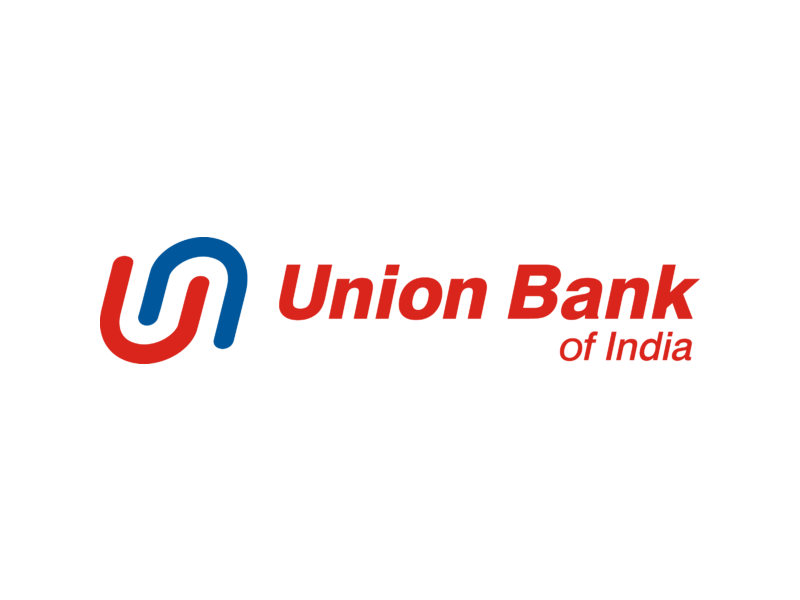

Agriculture Infrastructure Fund

ATMA
AGMARKET
Plant Quarantine Management System
Direct Benefit Transfer(DBT)

Pradhanmantri Krishi Sinchayee Yojana
Kisan Call Center
M Kisan
Jaivik Kheti
E-Nam

Soil Health Card

Pradhan Mantri Fasal Bima Yojana
PM Kissan Samman Nidhi

Jagananna Saswatha Bhu Hakku Bhu Raksha Scheme

YSR SUNNA VADDI PANTA RUNAALU

YSR free Crop Insurance

YSR Jala Kala

YSR Rythu Bharosa

Digital E Crop Booking

Kisan Credit Card
UBI Agriculture Loan

SBI Agriculture Loan

Indian Bank Agriculture Loan

NABARD